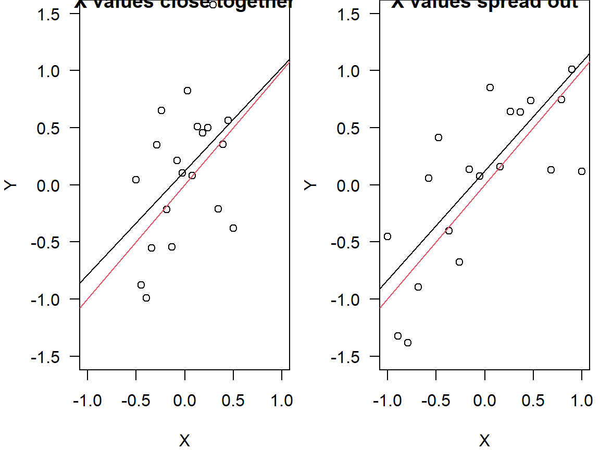
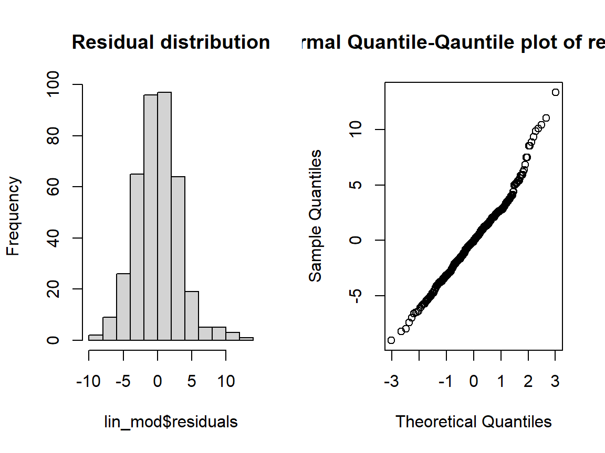
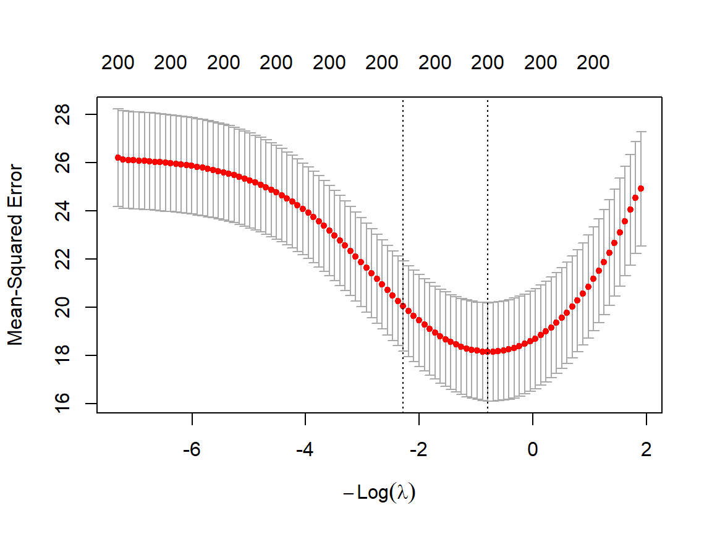
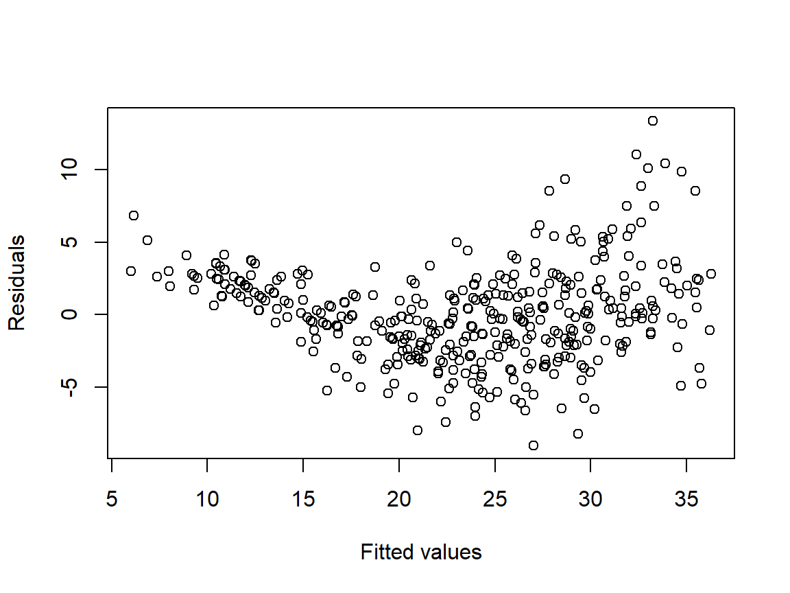
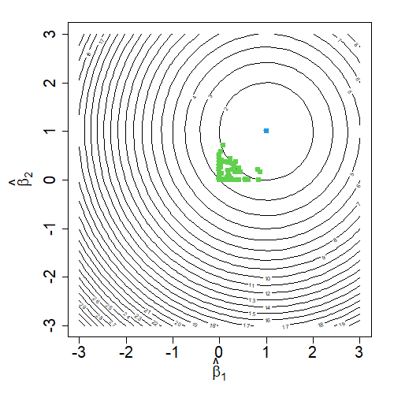
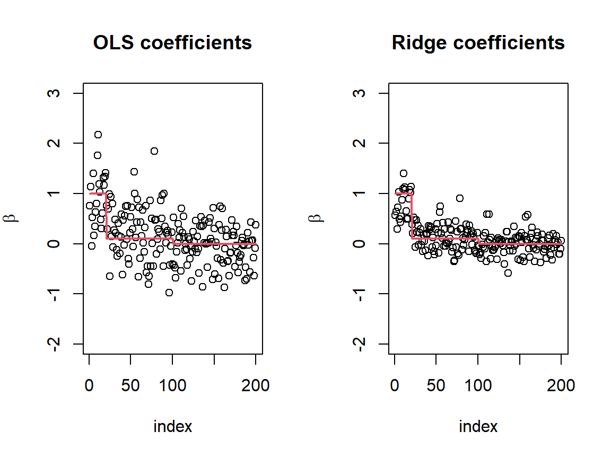

6 Linear Regression: Ordinary Least Squares and Regularised Variants
\[ \def\x{\mathbf{x}} \def\Rr{\mathbb{R}} \newcommand{\argmin}{\mathop{\rm argmin}} \newcommand{\argmax}{\mathop{\rm argmax}} \def\F{\mathcal{F}} \def\hbbeta{\hat{\boldsymbol{\beta}}} \def\bbeta{\boldsymbol{\beta}} \def\X{\mathbf{X}} \def\y{\mathbf{y}} \def\hg{\hat g} \def\hbeta{\hat \beta} \def\I{\mathbf{I}} \def\hbr{\hbbeta^{(ridge)}} \def\hbl{\hbbeta^{(LASSO)}} \def\hbe{\hbbeta^{e-net}} \]
In this section we will study the (multiple) linear regression model in greater detail, and will formally encounter a number of popular approaches for regularising estimation of the optimal linear model.
Despite their simplicity, especially in comparison with modern hyper flexible models, linear models remain extremely important for a number of reasons, not least of all their interpretability.
6.1 The Linear Model
As we discussed briefly in Chapter 4, a linear (or more technically affine) function of covariates \(X_1, X_2, ..., X_p\) is expressible as \[ g(X) = \beta_0 + \sum_{j=1}^p \beta_j X_j, \] where the vector of coefficients \(\bbeta = (\beta_0, \beta_1, ..., \beta_p)\) fully parameterises the function.
The description of a linear function conveys a lot of information about the “behaviour” of the function for changes in the values of the \(X\)’s. In particular, a one “unit” change in the value of \(X_j\) results in a change in \(g(X)\) by an amount \(\beta_j\). In addition the signs (positive or negative) of the coefficients describe the nature of the relationships between the function value and the variables, or more relevantly to our context, relationships between the covariates and the “typical” values of the response.
6.1.1 A Quick Aside on “Assumptions”
You will see many statistical texts saying that the linear model “assumes” the relationship between the (mean) response and the covariates is linear. Perhaps more correctly, regardless of the true form of the relationship between the response and covariates we may choose to model the (mean) response as a linear function of the covariates.
Why might we wish to do this? The fact of the matter is that, even if the actual relationship between \(Y\) and \(X\) is not linear, it may very well be prudent to model it as though it is. By doing so we give ourselves the ability to understand the effects of changes in \(X\) on the value of the prediction for \(Y\)
- Hopefully it is clear that this is not the same as the effects of changes in \(X\) on the actual value of \(Y\), or even of the actual value of the expected value of \(Y\). That is, how we choose to model the situation doesn’t change reality, but a simplified representation of reality which we understand may be more useful than a more accurate representation which we don’t.
Moreover, if the sample size is not very large then we may not have enough “information” to be able to accurately enough describe the true relationship between \(Y\) and \(X\), and in fact the accuracy of a linear model may be better than that of a model with the “correct” form simply because trying to estimate the right parameters for the “correct” model would result in very high variance.
- We saw this in essence (i.e. a model simpler than the true model being preferable) in one of the examples from Chapter 5, where we fit polynomial models to a simple example where we knew the true function was a degree 4 polynomial, but found that only when the sample became quite large did the accuracy of the fitted degree 4 model exceed that of the fitted degree 3 model.
Where the “assumptions” actually do matter, however, is in whether the theoretical results associated with linear models can be applied without error. We will describe some of these theoretical results, as we go forward.
6.2 Ordinary Least Squares
The Ordinary Least Squares (OLS) linear model is the direct extension of the simple linear regression model we saw before to the situation where we have multiple covariates
- More precisely the simple linear regression model we saw before was the OLS model for the particular context where we only have one covariate.
Although we have already seen this model briefly, here we will look in more depth.
Within the framework we have been considering, when performing training/fitting/estimation, our collection of functions \(\F\) from which to select our fitted model is the collection of all linear (affine) functions. This means that each \(g \in \F\) can be written as \[ g(\x) = \beta_0 + \sum_{j=1}^p \beta_j x_j, \] for some coefficients \(\bbeta \in \Rr^{p+1}\), and our loss function is the squared error loss. As a result we may describe the fitted OLS model as
\[\begin{align*} \hg(\x) =& \ \hbeta_0 + \sum_{j=1}^p \hbeta_j x_j, \mbox{ where }\\ \hbbeta =& \argmin_{\bbeta \in \Rr^{p+1}} \frac{1}{n}\sum_{i=1}^n \left(y_i - \hbeta_0 - \sum_{j=1}^p \hbeta_j x_{ij}\right)^2. \end{align*}\]
6.2.1 Some of the Theory for OLS
Partly because of its simplicity the theoretical properties of the OLS model have been studied extensively for many decades. We will barely scratch the surface of what is known about the model, but will cover some important practical aspects.
Suppose that the true regression equation is given by \[ Y = \beta_0^* + \sum_{j=1}^p \beta_j^* X_j + \epsilon, \]for some “true” regression coefficients \(\bbeta^*\), and where \(\epsilon \sim N(0,\sigma_{\epsilon}^2)\). Then conditional on the observations of the covariates (i.e. by treating the observations of \(X\) as fixed) we have
\[ \hbbeta \sim N\left(\bbeta^*, \sigma^2_{\epsilon}\left(\X^\top \X\right)^{-1}\right), \]
where \(\X\) is again the design matrix with \(i\)-th row \((1, \x_i^\top)\). That is, \(\hbbeta\) as an estimator has a multivariate normal distribution and
\(E[\hbbeta] = \bbeta^*\), i.e. \(\hbbeta\) is an unbiased estimator of the true coefficients
\(Cov(\hbbeta) = \sigma^2_{\epsilon}\left(\X^\top\X\right)^{-1}\), i.e. the variance of \(\hbbeta\) depends on the variance of the residuals (this should not be surprising; the more noise the “harder” it is to estimate the signal) and also depends on how “spread out” and also how correlated the observations of \(X\) are
It is easy to show that the prediction for the mean of the observations of \(X\) is equal to the mean of the observations of \(Y\). Loosely speaking we can think of the point \((\bar \x, \bar y)\) as a “pivot” for the fitted function, and in order to fit closely to the observations it is, in a sense, held in place by them. To ensure it doesn’t “wobble” too much on its pivot, we need anchors (observed values for \(X\)) which are quite spread out.
The following R code will create two scenarios; one with the values of \(X\) relatively closer together and the other with them more spread out. Everything else is exactly the same. Run the code multiple times. You should see more variability in the first scenario than the second.
### Scenario 1: X ranges from -0.5 to 0.5
x1 <- seq(-0.5, 0.5, length = 20)
### Scenario2: X ranges from -1 to 1
x2 <- seq(-1, 1, length = 20)
### Residuals: We can even use exactly the same values of the residuals
epsilon <- rnorm(20, sd = 0.5)
### Y: We now produce the different observations for Y
y1 <- x1 + epsilon
y2 <- x2 + epsilon
### Fitted models: Finally we fit the two linear models and plot
lm1 <- lm(y1~., data.frame(x1, y1))
lm2 <- lm(y2~., data.frame(x2, y2))
par(mfrow = c(1, 2))
plot(x1, y1, xlim = c(-1, 1), ylim = c(-1.5, 1.5), xlab = 'X', ylab = 'Y', main = 'X values close together')
abline(lm1$coefficients)
abline(0, 1, col = 2)
plot(x2, y2, xlim = c(-1, 1), ylim = c(-1.5, 1.5), xlab = 'X', ylab = 'Y', main = 'X values spread out')
abline(lm2$coefficients)
abline(0, 1, col = 2)
Returning to the distribution of \(\hbbeta\), if we look at each of the coefficients separately we have that \((\hat \beta_j - \beta^*_j)\big/\sigma_{\epsilon}\sqrt{(\X^\top \X)^{-1}_{jj}}\) has a standard normal distribution. But in practice we do not know the value of \(\sigma_{\epsilon}^2\) and need to estimate it. We will not go into any of the details for why, as these are beyond the scope of the module, but if we estimate \(\sigma_{\epsilon}^2\) using \(\frac{1}{n-p-1}\sum_{i=1}^n r_i^2\), where \(r_1, ..., r_n\) are the residuals from the fitted model, then \((\hat \beta_j - \beta^*_j)\big/\hat\sigma_{\epsilon}\sqrt{(\X^\top \X)^{-1}_{jj}}\) has a \(t\)-distribution with \(n-p-1\) degrees of freedom. This becomes important when we want to make inference about the true values of the coefficients since it allows us to obtain confidence intervals for the regression coefficients. Specifically we can obtain a \((1-\alpha)\times 100\%\) confidence interval using \[ \left(\hat \beta_j + t_{\alpha/2}\hat\sigma_{\epsilon}\sqrt{(\X^\top \X)^{-1}_{jj}}, \hat \beta_j + t_{1-\alpha/2}\hat\sigma_{\epsilon}\sqrt{(\X^\top \X)^{-1}_{jj}}\right), \] where \(t_{q}\) is the \(q\) quantile of the \(t\)-distribution with \(n-p-1\) degrees of freedom.
- Hopefully it is clear that this is only a valid confidence interval if the modelling assumptions hold.
6.2.2 Ordinary Least Squares in R
We already saw that the lm function allowed us to fit linear models, and in fact it does so based on the squared error loss function and hence the coefficients we get out are the \(\hbbeta\) above. The output of lm contains much more than just the regression coefficients, however, and here we will briefly discuss some of these by way of an example.
The Auto data set in the ISLR2 package contains information on 392 cars developed between 1970 and 1982. We may be interested in the relationship between its fuel efficiency (miles per gallon, mpg) and various other characteristics.
### Load the ISLR2 library and then the data set
library(ISLR2)
data(Auto)
### Inspect the data set variables
head(Auto)## mpg cylinders displacement horsepower weight acceleration year origin
## 1 18 8 307 130 3504 12.0 70 1
## 2 15 8 350 165 3693 11.5 70 1
## 3 18 8 318 150 3436 11.0 70 1
## 4 16 8 304 150 3433 12.0 70 1
## 5 17 8 302 140 3449 10.5 70 1
## 6 15 8 429 198 4341 10.0 70 1
## name
## 1 chevrolet chevelle malibu
## 2 buick skylark 320
## 3 plymouth satellite
## 4 amc rebel sst
## 5 ford torino
## 6 ford galaxie 500### We see the response variable mpg, and eight other variables
### which could be used as predictors. Most of these appear sensibly
### treated as numeric, and potentially useful predictors. However
### the car name should not be predictive (although the make of car
### could be, and as an extension we could create a factor variable
### which groups the cars by make). In addition the origin variable
### is curious. If you call help(Auto) you will see this is a numeric
### encoding of the region in which the car was developed. We should
### certainly treat this as a factor variable.
Auto$origin <- factor(Auto$origin, levels = c(1, 2, 3),
labels = c("American", "European", "Japanese"))
### We can now fit a model but exclude the name covariate
lin_mod <- lm(mpg~., data = Auto[,names(Auto)!="name"])
### The summary function will provide much of the information
### we may wish to inspect for understanding the properties
### of the model
summary(lin_mod)##
## Call:
## lm(formula = mpg ~ ., data = Auto[, names(Auto) != "name"])
##
## Residuals:
## Min 1Q Median 3Q Max
## -9.0095 -2.0785 -0.0982 1.9856 13.3608
##
## Coefficients:
## Estimate Std. Error t value Pr(>|t|)
## (Intercept) -1.795e+01 4.677e+00 -3.839 0.000145 ***
## cylinders -4.897e-01 3.212e-01 -1.524 0.128215
## displacement 2.398e-02 7.653e-03 3.133 0.001863 **
## horsepower -1.818e-02 1.371e-02 -1.326 0.185488
## weight -6.710e-03 6.551e-04 -10.243 < 2e-16 ***
## acceleration 7.910e-02 9.822e-02 0.805 0.421101
## year 7.770e-01 5.178e-02 15.005 < 2e-16 ***
## originEuropean 2.630e+00 5.664e-01 4.643 4.72e-06 ***
## originJapanese 2.853e+00 5.527e-01 5.162 3.93e-07 ***
## ---
## Signif. codes: 0 '***' 0.001 '**' 0.01 '*' 0.05 '.' 0.1 ' ' 1
##
## Residual standard error: 3.307 on 383 degrees of freedom
## Multiple R-squared: 0.8242, Adjusted R-squared: 0.8205
## F-statistic: 224.5 on 8 and 383 DF, p-value: < 2.2e-16In addition to the estimated coefficients, we see a number of other columns in table output from summary. These include Std. Error (the estimated standard error of the coefficients), and two additional columns named t value and Pr(>|t|). We saw previously that the estimated standard errors are the quantities \(\hat \sigma_{\epsilon}\sqrt{(\X^\top\X)^{-1}_{jj}}\). The other two columns are associated with statistical “hypothesis tests” for whether or not the true coefficients are zero or not. The reason we are interested in this is that if a coefficient is zero then the associated covariate does not have any effect on the model.
Now, since we know (if the assumptions hold) that our regression estimates are realisations of continuous random variables, the probability that we see \(\hat \beta_j\) exactly equal to zero is zero, regardless of whether or not the true coefficient is zero or not. So we need to ask ourselves “is our observed value of \(\hat \beta_j\) sufficiently far from zero to conclude that the true value is not zero?”. Although we can never be absolutely certain, we may be able to quantify how unlikely it is to see an estimated coefficient \(\hat \beta_j\) “like ours” if \(\beta_j^*\) is actually equal to zero. If it is very unlikely, then we could say with reasonable confidence that the true value is not zero.
So how could we achieve such a thing? Well, we could look to the sampling distribution of \(\hat \beta_j\). We already know that if our modelling assumptions hold then \[ \frac{\hat\beta_j - \beta_j^*}{\hat \sigma_{\epsilon}\sqrt{(\X^\top\X)^{-1}_{jj}}} \sim t_{n-p-1}. \]
And herein lies a beautiful thing about hypothesis tests. The above expression depends on \(\beta_j^*\), which we don’t know. But because we are only interested in this sampling distribution under the specific scenario where \(\beta_j^*\) is equal to zero, that doesn’t matter. That is, if \(\beta^*_j = 0\) then \(\hat \beta_j\big/\hat \sigma_{\epsilon}\sqrt{(\X^\top\X)^{-1}_{jj}}\) has a \(t\) distribution with \(n-p-1\) degrees of freedom. We can therefore evaluate the probability
\[\begin{align*} P\Bigg(&\mbox{I could have seen a sample with } \frac{\hat \beta_j}{\hat \sigma_{\epsilon}\sqrt{(\X^\top\X)^{-1}_{jj}}} \mbox{ further from zero}\\ & \mbox{than the one from my specific sample} \Bigg | \beta_j^* = 0\Bigg)\\ &= P\left(T > \left|t_{obs}\right|\right), \end{align*}\]
where \(t_{obs}\) is the observed value of \(\hat \beta_j\big/\hat \sigma_{\epsilon}\sqrt{(\X^\top\X)^{-1}_{jj}}\) from my sample and \(T\) is a random variable with a \(t_{n-p-1}\) distribution. These probabilities, or “\(p\)-values”, are the quantities reported in the Pr(>|t|) column in the linear model summary, and the statistics \(t_{obs}\) are reported in the column headed t value. The summary also indicates the “significance level” of these \(p\)-values where *** signifies a negligible probability (i.e. it is “extremely unlikely” that \(\beta_j^*\) is zero, since if it was we would almost never see an observed coefficient so far from zero); ** signifies that less than \(1\%\) of samples would lead to an observation at least as far from zero as our own; * signifies less than \(5\%\) of samples; and . signifies less than \(10\%\) of samples with an estimated coefficient as far from zero.
Looking at the above output we see that only cylinders (the number of cylinders in the engine); horsepower (a measure of the total engine power output); and acceleration (the time, in seconds, to accelerate from standstill to \(60mph\)) do not have any of these significance codes. This may well be surprising, since we certainly associate larger, more powerful engines with worse fuel efficiency. We will park that for now, and return to it a little later. Now, note that
These \(p\)-values are only appropriate reflections of “significance” if the modelling assumptions hold.
Hypothesis tests are notoriously hard to grasp when first encountered, and so if you found the above (very brief) overview of what is going on a little overwhelming, you are not alone. Another, possibly far more accessible approach for achieving essentially the same practicalities is to decide for yourselves what constitutes a “significant finding” from the point of view of what we referred to previously as a “level of confidence in your conclusions”. You can then construct an associated confidence interval based on this confidence level, and check whether zero lies within it. If not, then you should conclude that zero is not a “plausible value” for the coefficient.
\(R^2\) and the F-statistic
In addition to the tabular summary from the linear model is a number of comments in the footnotes. The \(R^2\) (R-squared) statistic quantifies the proportion of the variation in the responses which are captured by the model. This is a standardised measure of how well the model fits the data, since if we can “explain” the vast majority of the differences (variations) in the responses through the model, then it must be fitting well to the data. Formally it is defined as the ratio \(\sum_{i=1}^n r_i^2/\sum_{i=1}^n (y_i - \bar y)^2\), where again \(r_1, ..., r_n\) are the residuals from the model. The adjusted \(R^2\) (Adjusted R-squared) takes into account the amount of flexibility in the model, where the more coefficients we have the better we will be able to fit to the data, potentially leading to overfitting. Adjusted \(R^2\) is therefore a more appropriate statistic from an inference point of view, whereas raw \(R^2\) is more of a descriptive statistic.
It is very much possible, especially when there is a reasonably large number of covariates, that none of the individual variables contributes substantially to the prediction of the response, and that none is “significant” in the model (based on the \(p\)-value meaning of significance). We may in such situations question whether the model is actually capturing any relationship at all, or if the fit is just picking up on the noise. We can always look at the adjusted \(R^2\) for an indication of whether the model captures an appreciable amount of the variation in the responses, however any general threshold above which we decide “the model is picking up on some relationship between the covariates and the response” would be fairly arbitrary. But as with all other statistics, we could turn to the sampling distribution of the \(R^2\) and/or adjusted \(R^2\) to see if it is “significantly” above zero. As it turns out, if the modelling assumptions hold, then the quantity \(\left(1/(1 - R^2) - 1\right)\frac{n-p-1}{p}\) has what is known as an \(F\) distribution, with \(p\) numerator degrees of freedom and \(n-p-1\) denominator degrees of freedom. This statistic is reported as the F-statistic in the linear model summary, and its significance can be interpreted as indicating that the covariates overall (i.e. combined) are relevant to the prediction of the response, or that the model is not just capturing noise.
6.2.3 (Some) Regression Diagnostics
As we have hinted at, reliance on the confidence intervals and \(p\)-values should be done with caution due to their validity relying on the modelling assumptions that \(Y\) is expressible as a linear function of the covariates plus a normally distributed residual.
There are very many diagnostics which can be considered which can, to some extent, “test” the validity of these assumptions.
Linearity
If the model has appropriately captured the relationship between \(X\) and \(E[Y|X]\), then plotting (estimates of) \(Y-E[Y|X]\) against \(E[Y|X]\) should just look like “noise”, with no discernible relationships between the “signal” component \(E[Y|X]\) and the “noise” (residual) component \(Y-E[Y|X]\). If there is a relationship then what we think are just the residuals actually contain some of the “signal”.
### Let's return to the Auto data set and the linear model we fit
plot(lin_mod$fitted.values, lin_mod$residuals,
xlab = "Fitted values", ylab = "Residuals")
It should be clear that there is a relationship between the fitted values (estimated signal component) and the residuals (estimated noise component). In addition to the “U”-shape, we can also see that the residual variance is larger for larger fitted values, which would also violate the assumption that the residuals are independent of \(X\).
Note that although we can use such a plot to determine if the linear model is “incorrect”, we cannot reasonably rely on such a plot to “confirm” that the true model is linear. Nonetheless, if there is no apparent relationship present then it is certainly not unreasonable to rely on the model for prediction.
Normality of Residuals
Even if we cannot see any clear relationship between the fitted values and the residuals, if the residual distribution is far from normal then the confidence intervals and hypothesis tests are no longer valid. We can assess normality either with the use of a histogram or, more appropriately, with a quantile-quantile or “QQ” plot, which plots the residuals (or indeed any vector of numbers) sorted in increasing order against the quantiles of a normal distribution. If the residuals are approximately normally distributed we should see a more-or-less straight line.
par(mfrow = c(1, 2))
hist(lin_mod$residuals, main = "Residual distribution")
qqnorm(lin_mod$residuals, main = "Normal Quantile-Qauntile plot of residuals")Both the histogram and the QQ-plot show deviations from normality, in particular with a long right tail.
6.2.4 Multicollinearity
Recall that the covariance of the regression coefficients \(\hbbeta\) is \(\sigma_{\epsilon}^2 (\X^\top\X)^{-1}\). This comes from the fact that the coefficients can be expressed as \(\hbbeta = (\X^\top\X)^{-1}\X^\top \mathbf{Y}\), where \(\mathbf{Y}\) is the vector of responses \((Y_1, ..., Y_n)\). However, we have had a hidden assumption all along that \(\X^\top \X\) is actually invertible. Otherwise there OLS coefficients are not well defined.
The matrix \(\X^\top\X\) will be invertible as long as none of the columns of \(\X\) can be expressed as a linear combination of the others. However, even when \(\X^\top\X\) is invertible, it may be that some of the columns are almost expressible as linear combinations of the others. What this would mean is that at least one of the columns (say the column associated with \(X_j\)) can be predicted with low error by a linear model using the other covariates as predictors. Intuitively if one of the covariates can be predicted almost exactly using the others, then that covariate doesn’t provide much unique information for predicting \(Y\). When this occurs, it leads to the corresponding diagonal element in \((\X^\top\X)^{-1}\) being potentially very small, and therefore the variance of \(\hat \beta_j\) being very large.
The presence of covariates which are highly linearly dependent on the rest is known as multicollinearity and can wreak havoc on our inference. Most often this will simply, due to it leading to very large variance in the regression coefficients, mask potential significance of some of the covariates. However, it can also have the opposite effect, that it leads to some covariates being seen as significant in the model even when they are not, and to a much greater extent than would happen by chance if actually this multicollinearity were not present.
Variance Inflation Factors (VIFs) can be used to assess the level of multicollinearity, and the VIF for variable \(X_j\) is equal to \(1/(1-R^2_j)\) where \(R^2_j\) is the R-squared value from regression \(X_j\) on the other covariates using a linear model. The function vif in the package car computes Generalised VIFs which, for numeric covariates are the same as standard VIFs, but for categorical covariates combine the VIFs from each of the associated dummy variables.
## Loading required package: carData##
## Attaching package: 'car'## The following object is masked from 'package:dplyr':
##
## recode## GVIF Df GVIF^(1/(2*Df))
## cylinders 10.737771 1 3.276854
## displacement 22.937950 1 4.789358
## horsepower 9.957265 1 3.155513
## weight 11.074349 1 3.327814
## acceleration 2.625906 1 1.620465
## year 1.301373 1 1.140777
## origin 2.096060 2 1.203236Although there is no universally agreed upon threshold for when VIFs indicate problems, a rough rule of thumb is GVIF\(^{1/2df} > 3\) may be a problem where \(df\) is the number of degrees of freedom introduced by the variable, and is \(1\) for numeric covariates and the number of dummy variables used for categorical variables. In the above example we see that the first four covariates have large (G)VIFs, and this could be a reason why some of the otherwise apparently relevant covariates (cylinders and horsepower) were not significant in the model. However, in the exercises at the end of this chapter you will investigate some extensions of this model and see if there is another cause.
6.3 Regularisation for Linear Models
Regularisation typically refers to modifications of an estimator which reduces its variance; or makes the realisations of the estimator “more regular”. Although the linear model is a relatively simple model, and typically has comparatively low variance, this does not mean that regularisation of linear models will not still be beneficial. Moreover, as we just discussed, the variance of the linear regression coefficients may be very large when there is multicollinearity between the covariates.
Here we investigate some common approaches for inducing regularisation in linear models. However, the high level ideas are not restricted to linear models and in fact the same sorts of ideas are applicable more generally.
6.3.1 Regularisation Through Constraints
A very direct approach to reduce the variance of the regression coefficients is simply to force them not to take very large values (either positive or negative). For example, suppose that instead of choosing \(\hbbeta\) to minimise the training error over all possible vectors of coefficients, we could instead consider the constrained optimisation problem
\[\begin{align*} \min_{\bbeta} & \ \frac{1}{n}\sum_{i=1}^n \left(y_i - \beta_0 - \sum_{j=1}^p \beta_j x_{ij}\right)^2\\ s.t. & \ \sum_{j=1}^p \beta_j^2 \leq t, \end{align*}\]
for some chosen value of \(t > 0\).
This constrained optimisation says that we choose as our estimate the coefficients which minimise the training error, but not from all vectors in \(\Rr^{p+1}\) as in the OLS case, instead only from among those for which the constraint \(\sum_{j=1}^p \beta_j^2 \leq t\) is satisfied.
The value of \(t\) must be chosen somehow, but we have already seen how we might go about selecting from multiple models and each setting of \(t\) corresponds with a different model
Smaller \(t\) constrains the regression coefficients to a greater extent, leading to smaller variance
As \(t \to \infty\) we simply return to the OLS solution.
6.3.2 Regularisation Through Penalisation
Although intuitively setting up constraints in this way may be effective in inducing regularity in an estimator, it turns out there is a much more convenient approach. Mathematically there is a duality between constrained optimisation and so-called “penalised” optimisation. Specifically, if the functions \(f\) and \(h\) are “nice” (we won’t go into details of what that means here since all we need is the intuition) then for every \(t > 0\) there is a \(\lambda(t) \geq 0\) for which the solutions to
\[\begin{align*} \min_{\bbeta} & \ f(\bbeta)\\ s.t. & \ h(\bbeta) \leq t \end{align*}\] and \[ \min_{\bbeta} f(\bbeta) + \lambda(t) h(\bbeta) \] are exactly the same.
How this translates to our context is that instead of solving the problem of minimising the Least Squares objective subject to the constraint \(\sum_j \beta_j^2 \leq t\) we could be solving
\[ \min_\bbeta \frac{1}{n}\sum_{i=1}^n \left(y_i - \beta_0 - \sum_{j=1}^p \beta_j x_{ij}\right)^2 + \lambda \sum_{j=1}^p \beta_j^2 \] for some value of \(\lambda\).
This is a penalised optimisation problem, where instead of explicitly excluding the possibility of having an output/solution not satisfying the constraint, instead there is a “penalty” associated with solutions which might violate the constraint (i.e. with a large value of \(\sum_{j} \beta_j^2\)).
- The optimisation theory essentially says that if the OLS solution satisfied the constraint, then \(\lambda = 0\), and otherwise there is an appropriate amount of penalisation (value for \(\lambda\)) to ensure the constraint is met exactly and the solutions will be the same
But here is the crux: We don’t know a priori what an appropriate value for \(t\) (in the constrained formulation of the problem) is anyway. In practice we would consider a variety of values for \(t\) and select one using one of the model selection approaches we covered in the previous lecture. But if we would be trying out a whole lot of values for \(t\), we could equally just bypass this step and jump straight to the penalised formulation above; trying out a range of values for \(\lambda\) and selecting using one of our model selection techniques.
- There are a number of benefits of jumping straight to the penalised formulation: (i) solving the penalised problem is much easier than solving the constrained formulation (in fact typically constrained optimisation is solved by converting to a penalised problem); and (ii) the statistical properties of the solution to the penalised problem are much better understood than those of the constrained problem.
Arguably the main reason for describing the constraint formulation at all is that it conveys an intuitive interpretation of how regularisation is achieved more directly: We simply “trap” the potential solutions inside a “small ball”, so they can’t vary too much. However, the penalised formulation can also offer some intuition: Informally we may think of the “effort” in optimising the penalised objective as being split between minimising the training error and minimising the term \(\sum_j \beta_j^2\), and the larger the value of \(\lambda\) the more effort is placed on minimising \(\sum_j \beta_j^2\). We also saw that overfitting and high variance estimation comes about if we focus too heavily on the “details” (i.e. the noise) in the observations. By diverting some of the “attention” away from minimising the training error the estimation is less affected by the minutiae in the observations, and so less prone to overfitting.
6.3.2.0.1 A Quick Comment on Standardisation
Notice that the scale of the regression coefficients is typically inversely related to the scale on which the corresponding covariates are measured.
For example, suppose we were using people’s biometric information in order to assess their risk of certain conditions developing. If we had stored their weight in grams we would need to have a much smaller coefficient for weight then if we had stored their weight in kilograms.
If we apply the same amount of penalisation to a coefficient which “should be very large” and one which “should” not, purely because of how we stored the data and not because of their intrinsic relevance to the model, then this will have a much greater effect on the first than the second. When performing regularisation in this way it is therefore important to first standardise the coefficients to have similar (or the same) scale/variance. This must of course be taken into account when it comes to predicting the response on new “test cases”.
6.3.2.1 Visualising the Effects of Regularisation
Let’s consider just a very simple scenario, where \(Y = X_1 + X_2 + \epsilon\), and \(X_1\) and \(X_2\) are uncorrelated. The true coefficients are therefore each equal to one (and the intercept is equal to zero). At a population level the true regression coefficients are equal to \(\argmin_{\bbeta} E[(Y-\beta_1 X_1 - \beta_2 X_2)^2]\), and the following plot shows the contours of the function \(E[(Y-\beta_1 X_1 - \beta_2 X_2)^2]\). We can see the optimal solution at \((1, 1)\) and the value of the objective increasing quadratically as we move away from this point in any direction.
Any sample of observations of \(X\) and \(Y\), say \(\{(y_1, \x_n), ..., (y_n, \x_n)\}\), will, however, not show us these population level contours but only those of the training error objective. The following figure shows three potential training error contours:
In each case the population level contours are overlayed with the training error contours in red, and the minimisers of the training error are the corresponding OLS solutions.
If we had included a penalty on the training error, then this would modify the objective function and its contours. For example, the following figure shows both the population level and training error contours overlayed with the contours of the penalised training error with \(\lambda = 1\), shown in green:
We can see the effect is that the OLS solutions have been shifted closer to the origin. Although from only these three instances we cannot clearly see the effect on the bias and variance, in the following figure the OLS and penalised solutions are shown from 100 different samples:
The OLS solutions in the left plot are distributed more or less symmetrically about the true coefficients, consistent with the fact we know they are unbiased. However, they are quite spread out. The solutions from the penalised training error are substantially biased, underestimating the true coefficients (they have been “shrunken” towards the origin), but they have considerably less variance than the OLS solutions. If we had used a smaller value for \(\lambda\) then there would have been less bias, but not as drastic a reduction in variance. If \(\lambda\) had been larger then there would have been even more bias, but even less variance. For example, below are the solutions for \(\lambda = 0.1\) (left) and \(\lambda = 10\) (right):
We are unlikely to be able to see clearly the advantages of regularisation in a two-dimensional example, however these have hopefully given some intuition for how regularisation affects the bias and variance of the estimators. In the next subsection we also explore the effects of regularisation in a more appropriate setting, where the number of covariates is much larger.
6.3.3 Ridge Regression
The regression model associated with the penalised version of the OLS objective which we saw above is more commonly known as ridge regression.
As mentioned before, the penalised approach to regularisation has a number of advantages over the constrained approach, and in the case of ridge regression these largely stem (at least indirectly) from the fact that it has a closed form solution; \[ \hbr(\lambda) = \left(\X^\top \X + n \lambda \I_0\right)^{-1}\X^\top \y \] where as before \(\X\) is the “design matrix” and \(\y\) is the vector of observed responses, and here \(\I_0\) is equal to the identity matrix except that it has a zero in the first diagonal.
6.3.3.0.0.1 Notes
The reason for the zero in the first diagonal of \(\I_0\) is that we typically do not constrain/penalise/regularise the intercept term
The formulation above may differ slightly in how it is expressed from some other texts.
For example one can equivalently formulate the ridge and OLS procedures by first centering both the covariates and response as this has the effect of implicitly setting the intercept term. As long as everything is done correctly the resulting models will be the same, and the centering is typically done as a mathematical convenience more than anything else.
Some formulations also describe the ridge objective as the total training loss (not the average) plus the penalty term, in which case there will be just \(\lambda \I_0\) (or \(\lambda \I\) if centering is done) instead of \(n\lambda\I_0\). Again, since we don’t know the best value of \(\lambda\) anyway, these are ultimately equivalent.
One of the benefits of ridge over OLS is that the solution is always unique (provided \(\lambda > 0\) and none of the covariates are exactly constant). Operationally this is important since if we try to find the OLS solution by setting \(\hbbeta = (\X^\top \X)^{-1}\X^\top \y\) when the solution isn’t unique we will get an error since \(\X^\top\X\) is not invertible. On the other hand (as long as none of the covariates is constant) \(\X^\top \X + n\lambda \I_0\) is invertible.
6.3.3.1 Ridge Regression in R
The glmnet package includes hyper efficient implementations of ridge regression as well as the variants which follow later in the lecture. It effectively solves the entire “path” of solutions, for “all” values of \(\lambda\) over a broad range. The package also includes the function cv.glmnet which can be used for efficient cross-validation for ridge and variants. We can also access glmnet functionality using caret.
Example: “High Dimensional” Regression Simulation
Here we will look at the estimation of regression coefficients in a situation where the number of observations is only moderately greater than the number of covariates. The reason for this is so that we can compare the ridge estimates with the OLS estimates, and the OLS solution does not exist (or more precisely there is no unique solution) when \(n \leq p\).
In particular in the following R code we will simulate \(n = 250\) observations with \(p = 200\) covariates, and in such a way that only twenty covariates have a substantial influence on the response (with coefficients equal to 1); eighty have a very slight influence (with coefficients equal to 0.1) and the remaining 100 are not related to the response (with coefficients equal to 0).
### We need to load the glmnet library
library(glmnet)
### As always we also need to start by setting up what is constant
n <- 250
p <- 200
beta_true <- rep(c(1, 0.1, 0), c(20, 80, 100))
sigma_residual <- 3
### Now we can simulate observations
X <- matrix(rnorm(n*p), n, p)
y <- X%*%beta_true + rnorm(n, sd = sigma_residual)
### ... and fit OLS and ridge models
ols <- lm(y~., data.frame(X, y))
ridge <- glmnet(X, y, alpha = 0, )
# Notice that the glmnet function does not take a formula argument but rather requires
# the matrix or data frame of covariates and vector of responses separately.
# You may ignore the alpha = 0 component for now. Ultimately this is just telling glmnet to
# fit ridge models and not LASSO or other elastic net models (which we still have to cover)
### We can now investigate the estimated coefficients by plotting them along with the actual values
par(mfrow = c(1, 2))
plot(ols$coefficients[-1], ylim = c(-2, 3), xlab = 'index', ylab = expression(beta), main = 'OLS coefficients')
# we exclude the intercept as we are not interested in that for now
lines(beta_true, col = 2, lwd = 2)
# glmnet fits a large number of models by default, for a range of 100 different values for lambda
# These are stored in the columns of the output field $beta
# For example
plot(ridge$beta[,90], ylim = c(-2, 3), xlab = 'index', ylab = expression(beta), main = 'Ridge coefficients')
lines(beta_true, col = 2, lwd = 2)
It should be clear that the ridge estimates are much closer to the actual values of the coefficients. However, choosing an inappropriate value for \(\lambda\) may lead to either too little or too much “shrinkage”. As mentioned previously the glmnet package also provides the function cv.glmnet which will run cross-validation and perform model selection for us.
### First let's simply run cross-validation with the default settings (except
### that we set alpha = 0).
### As always you can learn more about these using help(glmnet)
ridge_cv <- cv.glmnet(X, y, alpha = 0)
### Plotting the ridge_cv object will produce a visualisation of the (square root of the)
### estimated prediction error for different lambda, along with standard error bars
### The two vertical lines show the value for lambda which gave the smallest estimate
### of prediction error and the simplest model (largest lambda) with estimated
### prediction error within one standard error of the lowest.
### Note that lambda is plotted on a -log(lambda) transformation, and so the values
### close to the left correspond with the largest values of lambda (most regularisation)
plot(ridge_cv)
### We can extract these two values of lambda
ridge_cv$lambda.min # minimum estimated prediction error## [1] 2.206135## [1] 9.774551### To extract a specific solution we can use the function coef(model, s = lambda).
### Let's plot the solutions selected using cross-validation
par(mfrow = c(1, 2))
plot(coef(ridge_cv, s = ridge_cv$lambda.min)[-1], ylim = c(-2, 3), xlab = 'index', ylab = expression(beta), main = 'Ridge by minimum CV error')
lines(beta_true, col = 2)
plot(coef(ridge_cv, s = ridge_cv$lambda.1se)[-1], ylim = c(-2, 3), xlab = 'index', ylab = expression(beta), main = 'Ridge by 1 standard error rule')
lines(beta_true, col = 2)We can see that the solutions are heavily shrunk compared with the OLS solution, but this has resulted in overall much better estimation. We can, for example, consider the differences between the estimated coefficients and the true coefficients
## [1] 45.42456### Squared error of ridge coefficients from minimum CV error
sum((coef(ridge_cv, s = ridge_cv$lambda.min)[-1] - beta_true)^2)## [1] 8.318845### Squared error of ridge coefficients from 1 standard error rule
sum((coef(ridge_cv, s = ridge_cv$lambda.1se)[-1] - beta_true)^2)## [1] 12.44804Degrees of Freedom/Covariance Penalties for Ridge Regression
Because the ridge model has a “nice” (closed form) solution, many of its statistical properties are relatively well understood. In particular, when the linear model assumptions are met it is known that
\[ \sum_{i=1}^n Cov(Y_i, \hat Y_i) = 1 + \sum_{j=1}^p \frac{d_j^2}{d_j^2 + n\lambda}, \]
where \(d_1 > d_2 > ... > d_p\) are the singular values of the \(\X_0\), the design matrix but excluding the column of ones (i.e. just the matrix of observations of the covariates). However, because estimation is conducted after standardising the covariates this needs to be taken into account.
Let’s see how selection based on the covariance penalty approach we looked at in the previous section performs:
### First we standardise the covariates
X_stand <- scale(X, center = FALSE)
### Now we compute the singular value decomposition
SVD <- svd(X_stand)
### We can now compute estimates for the expected in sample error
### over the range of values by computing the training error for each
### value of lambda and then adding the covariance penalty
training_errors <- apply(predict(ridge, X), 2, function(yhat) mean((y-yhat)^2))
cov_penalties <- sapply(ridge$lambda, function(lambda)
2*(1+sum(SVD$d^2/(SVD$d^2 + n*lambda))))*min(training_errors)/(n-p)
### We can then select the value for lambda which minimises the sum of the
### training error and covariance penalty
lambda_select <- ridge$lambda[which.min(training_errors + cov_penalties)]
lambda_select## [1] 1.520604### Finally we can compute the error in estimating the true coefficients
sum((coef(ridge, s = lambda_select)[-1] - beta_true)^2)## [1] 8.093744The accuracy of the solution is similar to that selected using cross validation, but requires much less computation.
6.3.4 The Least Angle Shrinkage and Selection Operator (LASSO)
The LASSO has become one of the most influential developments in “modern” statistics. Although already almost thirty years old it remains extremely influential and has spawned innumerable other developments since.
At face value the formulations of LASSO and the ridge appear extremely similar. Ultimately whenever there was a \(\sum_j \beta_j^2\) in the formulation of the ridge (either in a constraint or penalty), in the LASSO we replace this with another quantification of the “magnitude” of the coefficients through \(\sum_j |\beta_j|\).
For example, in the penalised form we have
\[ \hbl(\lambda) = \argmin_\bbeta \frac{1}{n} \sum_{i=1}^n \left(y_i - \beta_0 - \sum_{j=1}^p \beta_j x_{ij}\right)^2 + \lambda \sum_{j=1}^p |\beta_j|. \]
Yet, despite their marked similarity at face value, the solutions one actually obtains from the LASSO and ridge are typically quite different. The main reason for this is that the absolute value penalty used by the LASSO has the ability to implicitly “select” covariates for inclusion in/exclusion from the final model. How this is achieved is that as \(\lambda\) is increased the LASSO absolute value penalty has the effect of actually setting some coefficients to exactly zero. A coefficient equal to zero means the corresponding covariate has no influence on the outputs of the model; it has been excluded or “unselected”.
- Although we have seen the ridge squared penalty shrinks the coefficients towards zero as \(\lambda\) is increased, none of them actually every reaches exactly zero. As a result all covariates are still “in” the model; none have been excluded.
Because of its popularity and influence, the LASSO has also been extensively studied. However, as it does not have a “nice” (closed form) solution the statistical properties of the LASSO estimator are harder to pin down than those of the ridge.
6.3.4.1 Visualising the LASSO Shrinkage and Selection
The following plots show the same three examples we saw for the ridge penalisation, but with the absolute penalty of the LASSO and with \(\lambda = 0.5\). Although subtle, it is possible to see that, unlike for the OLS and ridge contours, the LASSO contours are not quite elliptical.
Again, however, only three examples does not clearly show the effect on the distribution of the LASSO coefficients as an estimator. The following figure therefore shows the results from the same 100 samples we saw previously, and their comparison with the OLS solutions:
Even in this small example, there is some evidence of the variable selection capabilities of the LASSO, where some of the solutions have “lined up” along the horizontal \(\hat \beta_2 = 0\) axis.
This effect will be more pronounced if we increase \(\lambda\), whereas for smaller \(\lambda\) fewer instances will have coefficients shrunk to zero. The following figure has the corresponding sets of solutions for \(\lambda = 0.1\) (left) and \(\lambda = 2\) (right):

6.3.4.2 The LASSO in R
Fitting LASSO models in R is done exactly as it was for ridge except we set the argument alpha to one, rather than to zero.
Let’s again fit models to our simulated “high dimensional” data in order to (better than in only two dimensions) visualise the selection capabilities of the LASSO, and also see how accurate models selected with cross-validation are in comparison with OLS and ridge. The following chunk of R code is analogous to what we did earlier, with only the very minor modification to alpha
### We start by performing cross validation in order to select appropriate
### values for lambda
lasso_cv <- cv.glmnet(X, y, alpha = 1)
### As before, plotting the lasso_cv object will produce a visualisation
### of the (square root of the) estimated prediction error for different
### lambda, along with standard error bars, with vertical lines showing
### the solution which minimises estimated prediction error and the
### solution using the 1 standard error rule
### As before lambda is plotted on a -log(lambda) transformation
plot(lasso_cv)
### We can extract these two values of lambda
lasso_cv$lambda.min # minimum estimated prediction error## [1] 0.1748325## [1] 0.3055247### To extract a specific solution we can use the function coef(model, s = lambda).
### Let's plot the solutions selected using cross-validation
par(mfrow = c(1, 2))
plot(coef(lasso_cv, s = lasso_cv$lambda.min)[-1],
ylim = c(-2, 3), xlab = 'index', ylab = expression(beta),
main = 'LASSO by minimum CV error')
lines(beta_true, col = 2, lwd = 2)
plot(coef(lasso_cv, s = lasso_cv$lambda.1se)[-1],
ylim = c(-2, 3), xlab = 'index', ylab = expression(beta),
main = 'LASSO by 1 standard error rule')
lines(beta_true, col = 2, lwd = 2)It should be clear that in both solutions many of the coefficients have been set exactly to zero. It may also be apparent that those associated with the large true coefficients are typically less shrunken compared to the ridge counterparts.
The overall squared estimation error also shows the good performance of the LASSO
### Squared error of LASSO coefficients from minimum CV error
sum((coef(lasso_cv, s = lasso_cv$lambda.min)[-1] - beta_true)^2)## [1] 4.914901### Squared error of ridge coefficients from 1 standard error rule
sum((coef(lasso_cv, s = lasso_cv$lambda.1se)[-1] - beta_true)^2)## [1] 5.817716Degrees of Freedom and Covariance Penalties?
It has been shown that for the LASSO with fixed \(\lambda\) one has
\[ \sum_{i=1}^n Cov(Y_i, \hat Y_i) = E\left[\sum_j I\left(\hbl_j(\lambda) \not = 0\right)\right], \]
that is, the covariance between the responses and the fitted values is equal to the expected number of non-zero coefficients (including the intercept). We can in principle use the number of non-zero coefficients in the solution we obtained as an estimate for this:
### As before we compute the training error and covariance penalties
### However we haven't simply fit the LASSO for a range of lambda values
### as we only called to cv.glmnet so far. However, the lasso_cv object
### has a field $glmnet.fit which contains exactly the same as the output
### from a call to glmnet
training_errors <- apply(predict(lasso_cv$glmnet.fit, X), 2,
function(yhat) mean((y-yhat)^2))
### Now the covariance penalties depend on the estimated coefficients
cov_penalties <- apply(lasso_cv$glmnet.fit$beta, 2,
function(beta) 2*(1+sum(beta!=0)))*min(training_errors)/(n-p)
# note above we have 1 + sum(beta!=0) since the intercept is not included
# in $beta
### We can then select the value for lambda which minimises the sum of the
### training error and covariance penalty
lambda_select <- lasso_cv$lambda[which.min(training_errors + cov_penalties)]
lambda_select## [1] 0.1322543### Finally we can compute the error in estimating the true coefficients
sum((coef(lasso_cv, s = lambda_select)[-1] - beta_true)^2)## [1] 5.0316246.3.4.3 Ridge or LASSO?
As with all things there is no “one size fits all” and whether the ridge or LASSO should be preferred is very much dependent on the situation. We saw in the previous simulations that for that context the LASSO gave more accurate estimation. However, we had simulated the situation where some of the coefficients (in fact half of them) are actually exactly zero and so the LASSO’s selection capabilities made it superior.
Some relevant points are, however, that
If a simpler/more interpretable model is desired, the LASSO is preferable as it can eliminate covariates if they are not contributing sufficiently to the prediction of the response
Fewer non-zero coefficients means understanding the predictions from the model is more straightforward, and inclusion of a variable in the model gives a sense of its significant relevance to the response
- Having said this, when there is strong correlation between multiple variables all of which are actually related to the response (i.e. their “true” coefficients are non-zero) the LASSO will often eliminate most of them and only keep one or a few as that is all which is “needed” for predicting the response
The non-zero coefficients are also typically closer to their OLS counterparts than in the ridge
If it is believed all covariates contribute at least somewhat to the response, then the ridge may be preferable
- The ridge also tends to “group” related covariates, assigning them coefficients with similar magnitude rather than eliminating most of them like the LASSO
In the absence of any such knowledge or objective, cross-validation can be used to estimate which offers better predictive ability
- If the accuracy of the coefficients themselves (and not the accuracy of prediction) is what is wanted then the bootstrap can be used to estimate the accuracy of the coefficients, however we do not cover this topic here.
6.3.5 Alternatives
Perhaps a better answer to whether one should choose the ridge or LASSO is that it is a false dilemma; there are alternatives.
The Elastic Net
The elastic net is a combination of the LASSO and ridge, in that it includes both penalties in the objective. Specifically, for \(\lambda \geq 0\) and \(\alpha \in [0, 1]\) (remember the parameter alpha from glmnet, well here it is) the elastic net solution is
\[ \hbe(\lambda, \alpha) = \argmin_\bbeta \frac{1}{n}\sum_{i=1}^n \left(y_i - \beta_0 - \sum_{j=1}^p \beta_j x_{ij}\right)^2 + \lambda\left(\alpha \sum_{j=1}^p |\beta_j| + (1-\alpha)\sum_{j=1}^p\beta_j^2\right). \]
For \(\alpha = 0\) we simply have the ridge and for \(\alpha = 1\) we have the LASSO
For appropriate values of \(\alpha\) and \(\lambda\) the elastic net can have the benefits of both
It can perform variable selection by shrinking coefficients to exactly zero
It can avoid “losing” relevant covariates due to correlation, and can also group correlated variables by the magnitude of the coefficients (like the ridge)
The glmnet function is actually always fitting an elastic net model, and in our previous calls to the function we had simply chosen the specific settings of \(\alpha\) which correspond to the ridge and LASSO models.
The Relaxed LASSO
Another alternative is to use the LASSO purely for variable selection, and then subsequently fit the OLS model only on those covariates not eliminated through the LASSO. This is known as the relaxed LASSO since it is less constrained than the standard LASSO. Even though the same covariates are included/excluded in the LASSO and its relaxation (whereas the selection of variables with elastic net may differ for intermediate values of \(\alpha\)), those which are included do not have their coefficients shrunk.
There is also a spectrum of models in between the LASSO and its relaxation, by taking a weighted average of the LASSO and relaxed LASSO coefficients. All of these are implemented in the glmnet package.
Subset Selection
An alternative to the penalisation/constraint approach to regularisation is to use some other strategy for variable selection. We will not cover these here, and for the interested student please look to Chapter 6.1 in An Introduction to Statistical Learning.
6.4 Summary
Linear models have a number of advantages over some of the more complex models we will encounter later on
They are generally more intuitive and their predictions and the influence of each of the variables are interpretable
They are also comparatively low variance estimators and may lead to better accuracy either when the true regression function is close to linear or when the sample size is not large enough to reliably estimate a more complex function
Regularisation (through constraints or more often penalties on the optimisation of the training error) can have remarkable effect on the accuracy of regression models
- Although we only looked at the “standard” regression problem here, the principles of regularisation as a way to traverse the bias-variance tradeoff is broadly applicable
- Different forms of the regularisation can dramatically change the fitted models even for similar overall bias and variance
- E.g. the selection capabilities of the LASSO
- No single formulation will always be superior to others, and knowing what is needed from the model and/or any relevant domain knowledge should be incorporated when available
- Remember that it is important to standardise covariates when regularising a linear model
- The
glmnetpackage is a fantastic piece of software